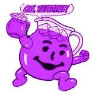
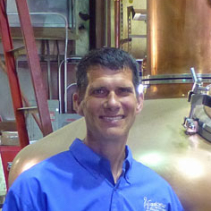
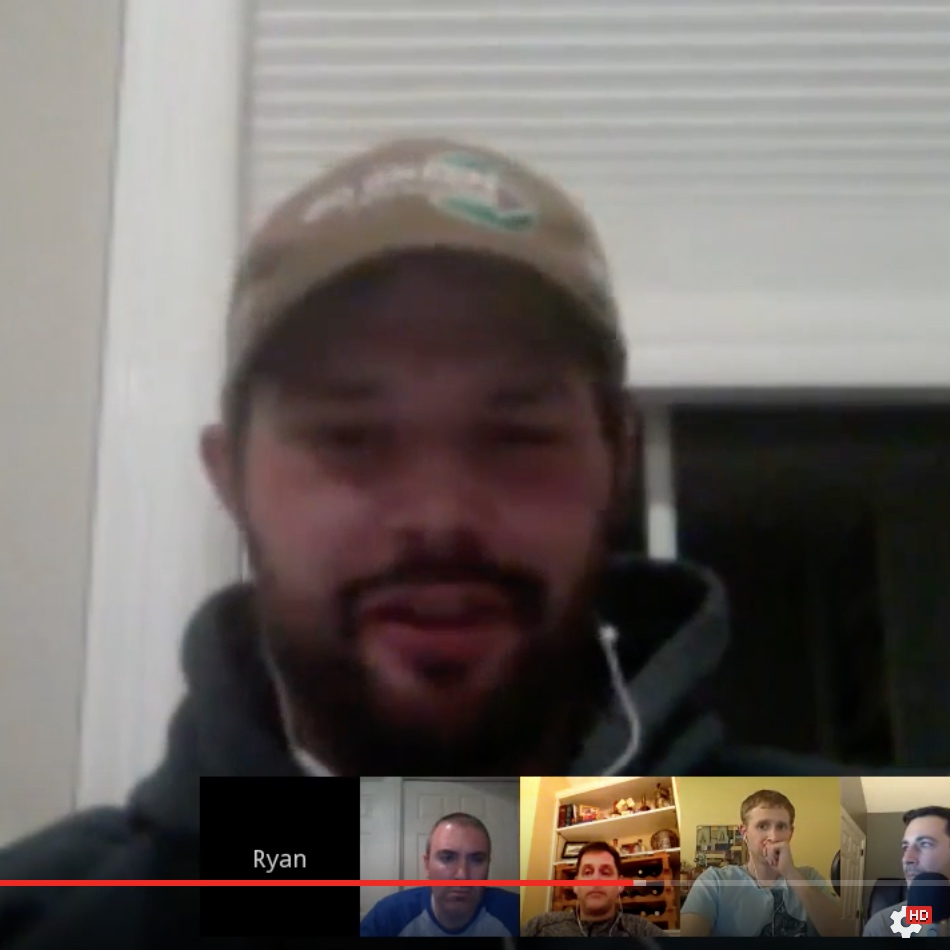
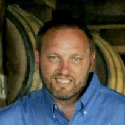
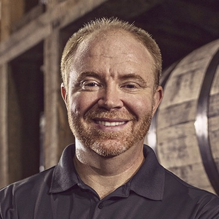
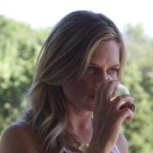
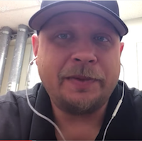
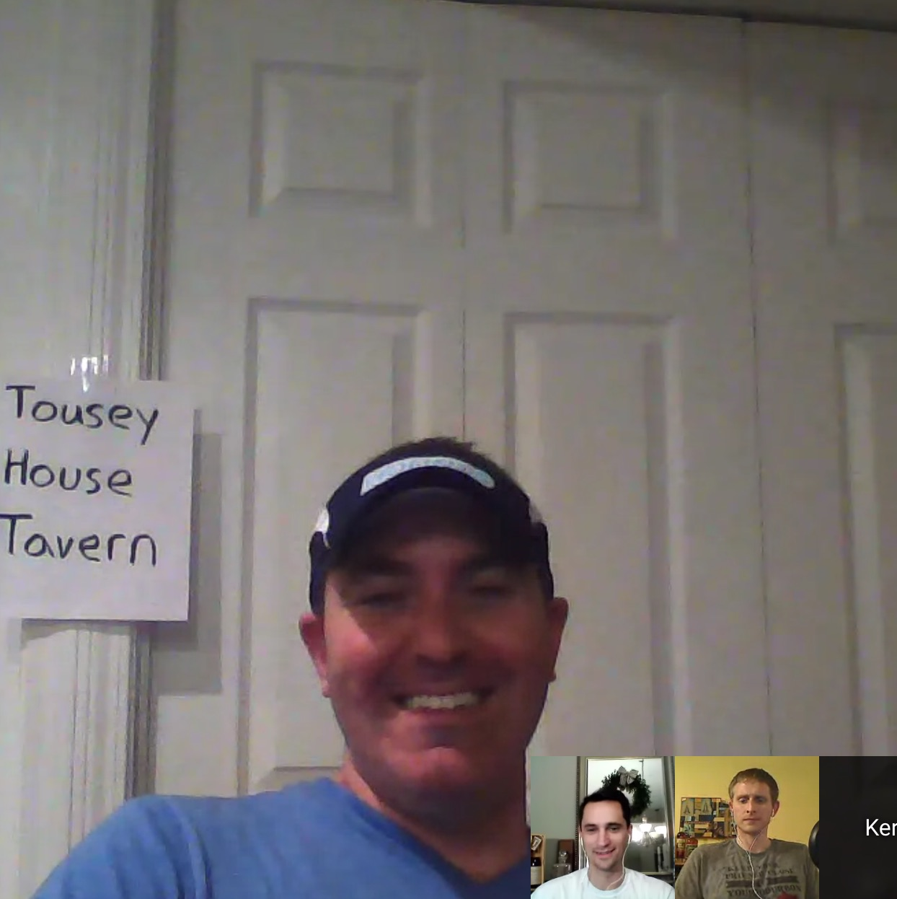

-
EPISODE
095
04.21.17
55:10
Beth Burrows, Kentucky Bourbon Ambassador for Beam Suntory, gives us all the history behind Jim Beam and the different expressions. We even get the chance to learn how Baker’s Bourbon got its name. Read Show Notes
- Tell us about your history with bourbon
- Do you miss bartending?
- What has the passing of Senate Bill 11, allowing producers to serve cocktails and more whiskey going to do for Jim Beam?
- Jim Beam is really pioneering and doing all flavored whiskey like the Apple and Honey, Black Cherry, Fire, Maple. Thoughts?
- Who’s your target market with these?
- Then you’ve got Jim Beam white label, black, double oak, devils’ cut, rye, bonded, single barrel,
- Tell us about the Jim Beam distiller’s masterpiece
- Names behind Knob Creek, Baker, Basil Hayden, OGD, Old Crow, Booker’s
-
EPISODE
094
04.13.17
74:35
Bourbon Truth, the infamous blogger and twitter persona known as Lloyd Christmas, gives a Bourbon Pursuit exclusive where no one is safe. He tells it like it is and let's you know not everything smells like roses.Read Show Notes
- What made you start blogging? (spoiler alert, he has bone to pick with the Van Winkles)
- Let’s talk about distilleries and their non-sense tactics. Which ones stand out the most and why?
- Your latest blog post talked about the issues behind private barrel picks. Let’s talk because people are moving to these as the limited edition market is now flooded with people.
- Lets talk about marketing over the value of the bottles. What do you see consumers continually falling for?
- Distillers are continually pushing the envelope of cost. Bottles are increasing in price and even limited editions that were once $50 are now $350 at retail. These were always 15 year bourbons. What’s the long-term effect?
- Should a person that never drank Bourbon before 2017 take the precious bottles from those drinking it for 5 or 10 years? Are they worthy?
- Is there a problem with people “collecting” bourbon?
- Does Craft Whiskey stand a chance?
Confused and in agreement at many levels of this Facebook friend suggestion pic.twitter.com/oc104mJ1cX
— Lloyd Christmas (@Bourbontruth) December 26, 2016 -
EPISODE
093
04.06.17
71:11
Fred Minnick interviews Tom Bulleit of the Bulleit Distilling Company for the Kentucky Derby Museum's Bourbon Legends Series.Read Show Notes
- Listen as Fred tries to pry information out of Tom about family history, stitzel-weller, age statements, and more
-
EPISODE
092
03.30.17
35:46

We are going back and revisiting episode #056 about building the barrels at Brown Forman. This is a great to wrap up back to basics month.
Michael Nelson, Plant Director at the Brown-Forman Cooperage, gives a step-by-step and inside look to the barrel making process. Read Show Notes- Give us your bourbon story.
- Before we dive into the ins and outs of technicalities of barrel char. give us a history lesson about where we are.
- So this is my first encounter being at a cooperage. give me the 101
- We saw one barrel that was cross cut. Talk about that.
- What’s the average number of discarded barrels that don’t meet some sort of quality assurance?
- Talk about char levels for a bit because it’s something that is always said, but never really explained about in depth.
- Is the barrel making process getting more expensive on a yearly basis because of demand and material supply?
- For everyone that missed the episode with Chris Morris where we talked briefly about the cooperage, talk about what it means to have a cooperage dedicated to their private whiskey
- The release of Cooper’s Craft happened recently. And it was named after the location of where we are recording today. What does that mean to you?
-
EPISODE
091
03.23.17
45:00
Mike Sherman, Owner of Vendome Copper and Brass Works, joins the show to talk about the art and craftsmanship that go into making the stills and how they have established being the best and #1 still maker after a century of being in business. Read Show Notes
- Before we get into talk about what it is that you do here, let’s get your thoughts on bourbon. Do you drink it? or just love it because it means good business right now?
- For those listeners who have never heard of Vendome, give them an idea of what it is you all make here and why it’s important
- What else do you make here besides copper stills?
- Give us the history of Vendome and how you grew up in the business.
- Give us a break down of trial and error. Because at this point you are carrying on legacy, but the generations before you probably had to go through retooling, or refactoring of certain things to make the stills as reliable as they are.
- Terry Bone & Brent Melvin ask how customized are your products? do they start with a base design for the stills or is it entirely customized to the whiskey manufacturers desires?
- Is there any innovation thats going on or is pretty much copy/paste?
- Why is copper the element of choice when making a still?
- What makes Vendome stills unique?
- What’s the average time is takes to manufacture a still? I know that’s a loaded question but humor me.
- Follow @VendomeCopper and Like on Facebook
A couple of pictures from our Foreman's Friday Stroll through the Assembly Bay pic.twitter.com/QlpSroaegG
— Vendome Copper (@VendomeCopper) January 26, 2015 -
EPISODE
090
03.16.17
76:13
The Bourbon Community Roundtable #7 talks about their beginnings with bourbon. Where did it all start, the intimidating scenarios, tips for beginners, and even tips for veterans. Read Show Notes
- What was your gateway bourbon? The one that started it all...
- Blake you started with a barrel-proof, why is that?
- Do you think it’s a smart idea to introduce people to bourbon with low proof vs high-proof?
- What bottles would you say are a must for a newb? I know this is very broad question, but if I was gonna start with 5 bottles, what would be on your list?
- What’s the most intimidating thing about being new to this?
- Tips to newbies getting into this
- Tips to veterans like us to help new people?
- What’s the first limited release bourbon that made you become a sucker for FOMO?
-
EPISODE
089
03.09.17
76:13
Bernie Lubbers, Whiskey Ambassador for Heaven Hill and also known as The Whiskey Professor, joins the show to talk about bottled-in-bond and what makes these bourbons “bricks of gold”. Read Show Notes
- Talk about Bern’s Corner and how you arrange your bottles
- What has made you so fascinated with Bottled-in-Bond.
- Talk about the issue or necessity behind bottled-in-bond
- When people were diluting whiskey or using tobacco spit, were people still buying it?
- Why 100 proof and not 90 or 80?
- Is the bottled-in-bond act still a binding piece of legislation?
- So you can have bottled-in-bond of spirits other than bourbon?
- There is an interpretation for bottled-in-bond corn whiskey
- Why did Issac Wolfe Bernheim against the bottled-in-bond act?
- Talk about Colonel Taylor and his involvement
- Were there any palms that were greased to make this happen?
- After this bill passed, did it put brands out of business?
- What’s the importance of having bottled-in-bond today?
- What is the responsible for the resurgence of bottled-in-bond?
Today is the 120th anniversary of the passing of the Bottled In Bond Act in 1897 - come by @haymarketwhisky tonight after 10 to celebrate pic.twitter.com/RZMoam9xIn
— Bernie Lubbers (@BernieLubbers) March 3, 2017 -
EPISODE
088
03.03.17
67:21
Tim Knittel, Bourbon Educator at Distilled-Living.com and a certified Stave & Thief Society Executive Bourbon Steward, kicks off "back to basics" month by giving an in-depth Bourbon 101 and 201 level knowledge bomb. You will learn something new, guaranteed or your money back! Read Show Notes
- let's start from the top. What is bourbon?
- How's it made?
- What goes into it?
- What's the average proof coming off the distillate?
- Some people say that limestone water is a big reason why Kentucky bourbon taste better. Is that true or can I get the same effect out of a garden hose?
- Is anything stopping someone outside of America from making a bourbon or it just can't be called that?
- What advice do you give people of the first bottles to buy that give you a variable taste range?
- So people like us who think we know everything, what's a common misperception or falsification we tend to fall for?
- What’s the most common question you get asked at your tastings
-
EPISODE
087
02.23.17
40:52
Brent Elliott, Master Distiller at Four Roses, talks about how he never owned a bottle of Four Roses until he interviewed and how the conversation went when he was tapped to be the new Master Distiller. Read Show Notes
- Talk about growing up in Owensboro, your history and education
- What made you want to get into bourbon?
- Were you a Four Roses bourbon fan when you applied to work here?
- Was Four Roses the first place you looked at working?
- How long have you been working at Four Roses?
- Talk a little bit about working with Jim Rutledge under his tutelage.
- So talk about that phone call, when it’s usually depicted in the movies as being called up to the CEOs office on the 33rd floor to get that big promotion
- Why is there not a rye whiskey offered by Four Roses?
- What about the rage of barrel finishes or cinnamon whiskey?
- From Kevin Ragland on Facebook - How was the process for selecting 2016 LE went since it was the first time you would have done it without Jim.
- Why did you come out and call it Elliott’s Select instead of just the normal 2016 Limited Edition Single Barrel?
- From Travis Roberts on Facebook - Will FR continue their barrel selections in the future and if so, will they eventually be able to offer barrels aged 10+ years again to consumers?
- Talk about life outside of bourbon
-
EPISODE
086
02.16.17
61:42

The Bourbon Community Roundtable #6 discusses Beam sales tactics with OGD114 news, Buffalo Trace OFC conspiracy theories, and is there a bias towards NDP/MGP when buying off the shelf. Read Show Notes
- Blake from Bourbonr.com, Nick from BreakingBourbon.com and Kerry from Subourbia.com.
- OGD 114 is here to stay. Another Beam ploy to drive shelf sales.
- There’s been no shortage of getting your chance to buy raffle tickets for the Buffalo Trace OFC bottles. They carry a suggested price tag of $8-10k. Is there a hidden motive here by Buffalo Trace? A clever coup by BT to bring a bottle to market valued at $10k then release more OFC to the general market at $1k and call it a bargain?
- NDP, MGP, and the bias. Do you hold a grudge against NDPs and refuse to buy? Or are you a believer that the flavor can come from aging and finishing rather than the distillate.
- Bruce Schwalm: Question for the panel: If we geeks are the 1% of the drinkers, why aren't we more focused on the art and less on the marketing?
-
EPISODE
085
02.10.17
33:50
James Markert, author of The Angel’s Share, joins the show to share information about the first fictional novel based on bourbon that takes place in Twisted Tree, Kentucky on an old family distillery that was abandoned after prohibition.Read Show Notes
- Talk about your brush with bourbon
- Let’s talk about The Angel’s Share, what’s the premise of the story?
- What are some distilleries where you got inspiration?
- Does it take a different kind of author to write something completely fictional?
- Do you have a fascination with the 1920’s gangster era?
- What does this book mean to you as you carve out a new mark in bourbon history?
-
EPISODE
084
02.02.17
49:44
Elizabeth McCall, Sensory Scientist and Master Taster, Brown-Forman, joins the show to share what happens behind the white curtain and how people with a psychologist degree are recruited into bourbon.Read Show Notes
- Talk about your past, growing up and your education
- What got you into brown spirits
- Did you have family influences or connections to the spirits industry?
- So I have to be honest, we have done the rounds with Master Distillers and they always give credit to people like you, but lets get an idea of your day to day responsibilities
- What else happens in the lab? we need to give our listeners an idea of what’s happening behind the curtain so-to-speak
- So why psychologists for being sensory scientists? go deeper there
- What’s the most important sense when it comes to making a product consistent?
- What does catching a cold have on the influence of the bourbon your doing that day? or do you have an addiction to Afrin nasal decongestant?
- What sort of training goes into becoming a master taster?
- From Matt Fisher on Facebook: Super nerdy and specific. With most bourbon drinkers using Glencairn glasses at home, why does the distillery use Copita Nosing glasses vs the Glencairn? Looking for an expert opinion of why they use the Copita.
- I watched part of your presentation of change and you gave a good explanation of why people mix their bourbon with coke, explain that
- Talk about your other passion of horses
Today's forecast calls for a dusting of bourbon. pic.twitter.com/mWRGZy11ft
— Woodford Reserve (@WoodfordReserve) January 30, 2017 -
EPISODE
083
01.27.17
46:01
Ed Bley, Spirits and Beer Manager at Cork ’N Bottle, joins the show to talk about their historic past with bourbon, the importance of shopping small, and his process of doing barrel picksRead Show Notes
- Dive into your past and some history to what led you into bourbon
- What’s the history of Cork N’ Bottle?
- Talk about how you deal with allocated releases
- What’s the importance to shop small and local?
- What’s your process for barrel picks?
- Anything special coming up?
-
EPISODE
082
01.20.17
59:53
The Bourbon Community Roundtable #5 dicusses the theories behind Old Scout, 2017 Predictions and Easily Obtainable Barrel Proof Choices. Read Show Notes
- Joined by Blake of bourbonr.com, Jordan of breakingbourbon.com, and Kerry of subourbia.com
- So Smooth Ambler has discontinued their barrel program, which means no more private picks of SAOS. Thoughts?
- 2017 Predictions. What's going to happen?
- Are there any companies that will be bought up in 2017?
- Are we going to see more bottles lose age statements?
- Is there a consensus favorite among the more easily "obtainable" high proof? Stagg Jr, ECBP, EH Taylor BP
-
EPISODE
081
01.13.17
31:11

Ryan Ashley, COO and Director of Distillery Operations, talks about how his history of beer brewing led him to distillation, the Four Roses brand, distillery expansion, and even hints at a possible Four Roses Rye. Read Show Notes
- Today's Guest co-host is Linden Ferguson
- Talk about your past. Where did you grow up and your education, family influence, all that
- You’ve been known to be a big beer guy.
- What got you into bourbon?
- Talk about your job for a few minutes and your responsibilities
- So before we get into it, I think this is a good time to re-introduce Four Roses to people. So talk about the uniqueness of four roses with the two yeast strains, 10 recipes, warehouses, etc
- This big news is that Four Roses is investing $55 Million into expanding operations. And we have all been in remodeling projects so we know that you need to budget 15%, so we’ll say 63million. talk about that
- From Michael Leeper on Facebook, What kind of issues do you struggle with as you scale up distillation?, "How do you ensure raw ingredients are available to meet your need (from grain, to glass, to packaging and ultimately labor)", "Is there a limit to how big you can grow within the Bourbon region?"
- Talk about working with Brent Elliott
- Are you a stout guy or hops guy?
-
EPISODE
080
01.06.17
67:55

Chuck Cowdery, Bourbon Author and media pundit, joins to talk about Jim Beam backpedaling it’s way out of Booker’s price increase and the unique purchases Sazerac is making to expand their footprint. Read Show Notes
- Talk about how you got into bourbon in the beginning
- Give the listeners a quick background on your books
- The Booker's thing is on everyone's mind and you had a article calling their actions dumb and embarrassing
- Sazerac has purchased the Popcorn Sutton, a building in downtown New Orleans and more recently. Possibly attributed due to the success of Fireball. What’s on the horizon for them?
- Chuck on Facebook
- http://chuckcowdery.blogspot.com

-
EPISODE
079
12.30.16
42:55

John Little, VP and Head Distiller at Smooth Ambler, talks about the how the whole operation started from a note his father-in-law gave him from Time magazine. John dives into the roots of his current distillation and the single barrels seen on the market. Read Show Notes
- Talk a little about your past and how you got into Whiskey
- What made you want to start a bourbon company a long time ago outside of KY?
- Talk about Smooth Ambler for a bit and what you offer
- Talk about the name behind it as well. Smooth Ambler, Contradiction, Old Scout, etc;
- So how did you learn about the distilling process since you didn’t have a background in it?
- You all don’t hide the fact that a lot of what’s on the market today is sourced from MGP. But there was a question that was brought up by Ryan Lintz that asked “Why Does SA MGP sourced bourbon taste so much better than others? Is it because it’s bottled at Cask Strength? Or is it a mental hype train thing?”
- The Old Scout store picks have had wild success. It seems like people can’t get enough of them
- Are we ever going to see Very Old Old Scout again?
- The biggest news as of late was Pernod Ricard has taken a majority stake in your company. First off, congratulations. I hope we’re going to see a new ferrari in your driveway soon, but what does this mean for your business.
Sir Pickles - Enough Said pic.twitter.com/bLD49DNeUy
— Smooth Ambler (@SmoothAmbler) January 7, 2015 -
EPISODE
078
12.23.16
65:37

This one is going to be a heater in December! Join Bourbon Pursuit along with bloggers from Bourbonr, Subrourbia, and Sipp'n Corn to talk about these following questions and a 2016 Year in Review: Read Show Notes
- Let's bring the heat. What the hell is Beam doing?!
- On the last episode we talked about gifting bourbon in the $50 or $100 range. Now, what bourbons do you "want" to be gifted if you had the choice?
- Was 2016 a year of dud bourbons?
- What was one thing you were happy about and one thing that pissed you off in 2016?
-
EPISODE
077
12.16.16
61:31

Jimmy Russell, Master Distiller and Legend at Wild Turkey, sits down to tell his story. He thinks he’s “Plain Ol’ Jimmy” but once you hear his stories about childhood, befriending the likeness of greats in the industry, and sharing his wealth of knowledge you will see he really is an icon. Read Show Notes
- I want to talk about your history before Wild Turkey.
- Talk a little bit about your childhood and upbringing. Sports, basketball, track, baseball.
- I know your father and grandfather were in this whiskey business, is that why you got into the bourbon industry?
- Were you always around bourbon?
- What made you come to Wild Turkey in beginning?
- What was the state of Wild Turkey when you joined?
- How big was the operation?
- Who were your mentors?
- How have you embraced a lot of modern distillation techniques with computers and automation taking over?
- What was life like for you before the boom?
- Did you ever make any radical changes to Wild Turkey?
- You were best friends with the greatest minds in the industry before bourbon was cool. Talk about the comradery between people like you, Elmer, Booker, and the like.
- Now that bourbon is in the spotlight, are you hesitant on taking a backseat because at 82 years old, you won’t stop and you continue to travel to talk about Wild Turkey.
- Your son Eddie now has taken the spot light. What’s it mean to you that you get to trust the business to him?
- From @bourbonooga: Do they wish the old distillery was still down by where Warehouse A sits?
- From @Primo55: The eternal debate: Cheesy Gold Foil 12yr or Split Label 12 yr?
- What do you think is the best product that ever came out of here?
- Give us your thoughts on the 6-8 vs older aged bourbons?
- From @BreakingBourbon: Share a drink with anyone past/present/future who would it be and why?
- What are some of those things that you want to leave as a legacy?
-
EPISODE
076
12.09.16
31:23

Kevin Didio, Manager of Kentucky Visitor Experience at Bulleit Frontier Experience, talks about his career in bourbon with multiple distilleries, dives into the history of Stitzel-Weller and IW Harper, and talks about the visitor attractions you can see at the reinstated Stitzel-Weller Distillery. Read Show Notes
- Talk about your role here at the Bulleit Frontier.
- Before we talk about some of the other positions you've held, Talk about how you got into bourbon. I found my calling in college, what about you?
- Talk about your career with various players in the industry
- Talk about more about your time at Jim Beam and what you were doing
- This is also the historic site of the Old Fitzgerald / Stitzel-Weller Distillery. Now, we do have a lot of people listening for the education, so talk about the history of the distillery itself.
- Can you comment on what you think made people Stitzel-Weller crazy?
- Talk about what's happening on the grounds here today. Distillation? Aging? Bottling? Brands?
- Is there a possibility that Bulleit can have the same product as the famed Stitzel-Weller?
- Talk about the bottling happening here
- Give people the small run-down of Bulleit history
- Talk about Blade and Bow
- It's a bit of an odd duck here because this is owned by Diageo. You've got a whole heap of brands that you can talk about. Bulleit, IW Harper, Orphan Barrels, blade and Bow etc. Talk about which one of those you have a bigger fascination with and why
- At this point, I guess we never talked about some IW Harper history. Can you school us there?
- Talk about a typical tour done here?
- How can people schedule tours?
MORE EPISODES
→